곁 작업 로그
청소년 상담 사례 분석부터 학교폭력 사안처리 챗봇까지 · 2026-10-15 ~ 2026-10-19 · 서비스 이름 곁(가제 MindGuide에서 변경) · 폴더 gyeot(이전 mindGuide_test)
Wee 우수사례집 42건 상담 주제 분류
2026-10-15한 일
- 「제14회 위(Wee) 희망대상 우수사례집」에서 텍스트를 추출해 사례별 내담자 기본정보·주호소문제·상담자가 파악한 문제를 정리
- 42건 = 개인 사례 30건(대상 5, 최우수 10, 우수 15) + 기관 사례 12건(대상 2, 최우수 10)
- 개인 사례마다 주 카테고리 1개와 함께 나타난 관련 이슈를 표시. 기관 사례는 운영 프로그램이라 따로 정리
| 카테고리 | 주 카테고리 | 관련 이슈 언급 |
|---|---|---|
| A. 자해·자살 위기 | 8건 | 15건 |
| D. 또래관계·따돌림·학교폭력 피해 | 5건 | 19건 |
| B. 우울·무기력·낮은 자존감 | 4건 | 12건 |
| C. 불안·사회불안·대인 위축 | 4건 | 12건 |
| G. 학교부적응·등교거부·학업중단 위기 | 3건 | 13건 |
| F. 분노조절·ADHD·행동문제 | 2건 | 6건 |
| H. 스마트폰·온라인 과몰입 | 2건 | 4건 |
| E. 가정문제 | 1건 | 21건 |
| I. 학업·성취 압박 | 1건 | 3건 |
분석 결과 HTML 만들기
2026-10-15wee_case_analysis.html: 요약 카드, 막대 차트 2개(주 카테고리 / 관련 이슈), 카테고리 요약표, 30건 분류표(카테고리 필터), 기관 12건 표- 다크 모드·모바일 화면 대응. 이후
mindGuide_test폴더로 복사
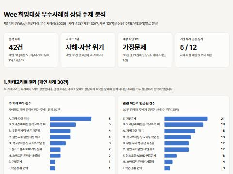
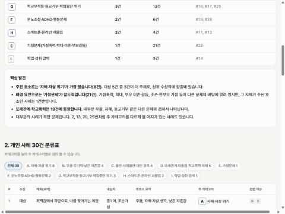
테스트 주제 결정과 학교폭력 가이드북 검토
2026-10-15검토 결과
| 항목 | 평가 | 근거 |
|---|---|---|
| 신뢰성·최신성 | ◎ | 2026 개정판, 법령 근거, 딥페이크 등 최신 유형 포함 |
| 사실·절차 정확도 채점용 | ◎ | 신고처, 조치 번호, 요건, 기한 등 구체적 수치가 많음 |
| 텍스트 추출(RAG) | ○ | 텍스트 PDF라 추출 양호. 흐름도·표·부록 양식은 노이즈 |
| 학생 눈높이 정서 상담 | △ | 독자가 교사라 학생에게 직접 건넬 표현은 적음 |
| 위기 신호 대응 | ✕ | 216쪽 전체에 '자해'·'자살' 단어 없음 |
docs/가이드북_검토_요약.md에 저장(8단계).챗봇 v1: 가이드북 기반 RAG 챗봇
2026-10-15gemini-3.8-flash, API 키는
환경변수 사용구성
- PDF 216쪽 → 쪽 단위 청크 313개, 목차 기준 장 이름 부여 → BM25(kiwipiepy 형태소) 검색
- Gemini OpenAI 호환 엔드포인트로 답변 생성, 환경변수
GEMINI_API_KEY사용, condaDS환경의 Streamlit 화면 - 답변 규칙: 자료 안에서만 답하고 문장마다
[p.쪽]인용, 성폭력은 수사기관 즉시 신고 의무 먼저, 자해·자살 신호는 가이드북 범위 밖임을 먼저 안내 run.bat실행 파일,logs/chat_log.jsonl질문·답변 기록
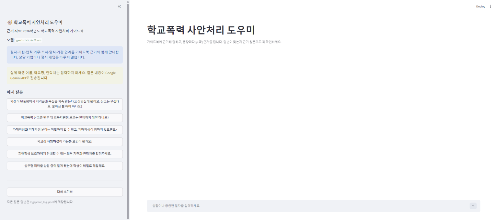
오답 발견과 원인 분석
2026-10-15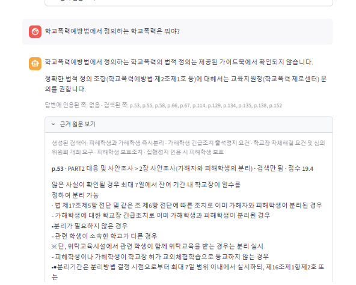
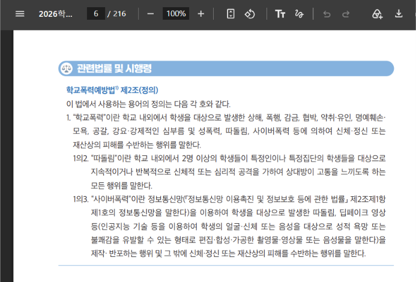
챗봇 v2: 벡터 검색 추가와 근거 표
2026-10-15수정
- 후속 질문 판단을 Gemini에 맡김: 이전 질문은 "그럼 양식은?" 같은 후속 질문일 때만 반영하고, 새 주제면 무시
- 하이브리드 검색:
gemini-embedding-001(3072차원) 벡터 코사인 유사도 + BM25를 RRF로 합산.index/embeddings.npy생성 - 답변 형식: 정의·요건 같은 사실 질문은 바로 답하고, 상황 질문만 "지금 해야 할 일 / 연계 기관 / 유의사항 / 양식" 구성
- 근거 표: 답변 아래에 순위, PDF 쪽, 인용 여부, 벡터 유사도(코사인), BM25, 각 순위, 장 이름 표시
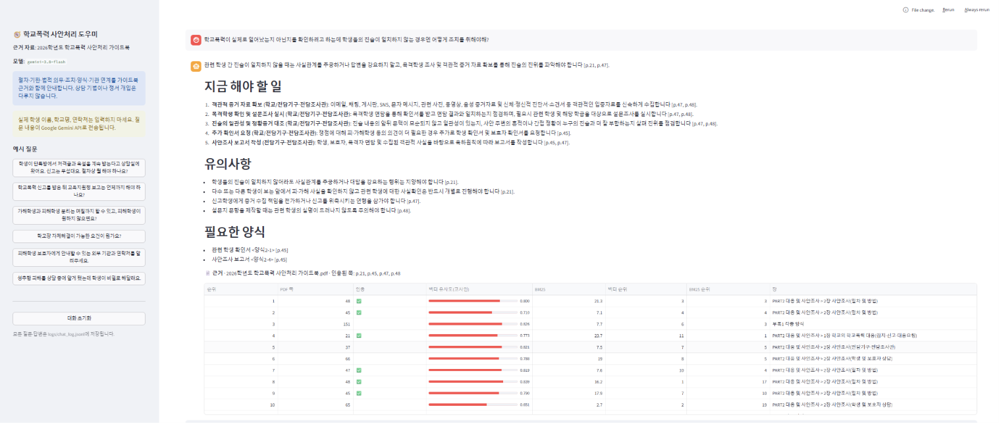
근거 원문 보기 다듬기
2026-10-15 ~ 16| 요청 | 반영 |
|---|---|
| 벡터 유사도 0.75 이상만 근거 원문에 | 임계값 필터 추가(이후 아래 요청으로 대체) |
| 유사도 가장 높은 것부터 | 근거 원문을 코사인 내림차순 정렬 |
| 근거 원문은 인용된 것만 | 답변에 인용된 쪽의 청크만 표시, 인용 안 된 개수는 안내 문구로. 0.75 임계값은 제거 |
질문: 코사인이 높은데 왜 인용되지 않았나?
코사인 유사도는 질문과 주제가 비슷한 정도이지, 그 청크에 답이 들어 있는지가 아님.
- p.169(0.805)·p.166: 부록 양식. 주제어는 많지만 요건 설명이 아님
- p.153: 사안조사 보고서 양식에 요건이 체크박스로 있지만, 같은 내용의 본문(67, 73쪽)이 더 좋은 근거라 그쪽이 인용됨
- p.72: 흐름도라 텍스트로 뽑으면 문장이 깨짐
결과물 파일 저장 보완
2026-10-16logs/chat_log.jsonl: 근거마다id, page, section, cos, bm25, rrf, cited, matched_query, text저장(이후 질문부터 적용)docs/가이드북_검토_요약.md: 3단계 검토 내용과 그 뒤 결정·반영 사항- 이 작업 로그(
workinglog.html)와 스크린샷(docs/img/)
현재 화면 (v3)
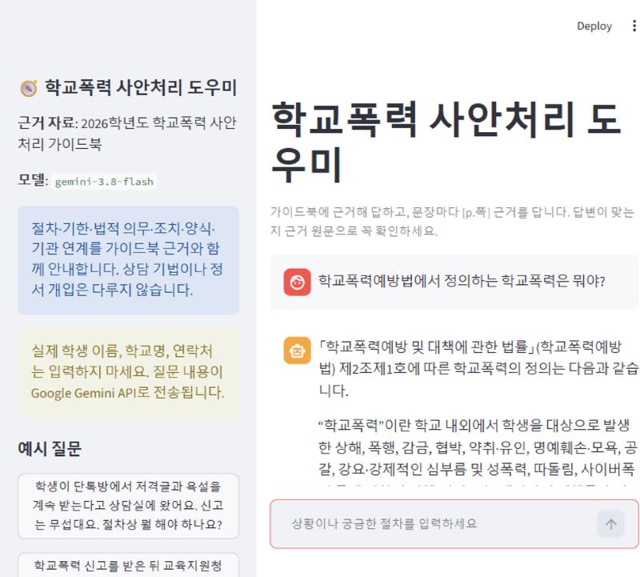
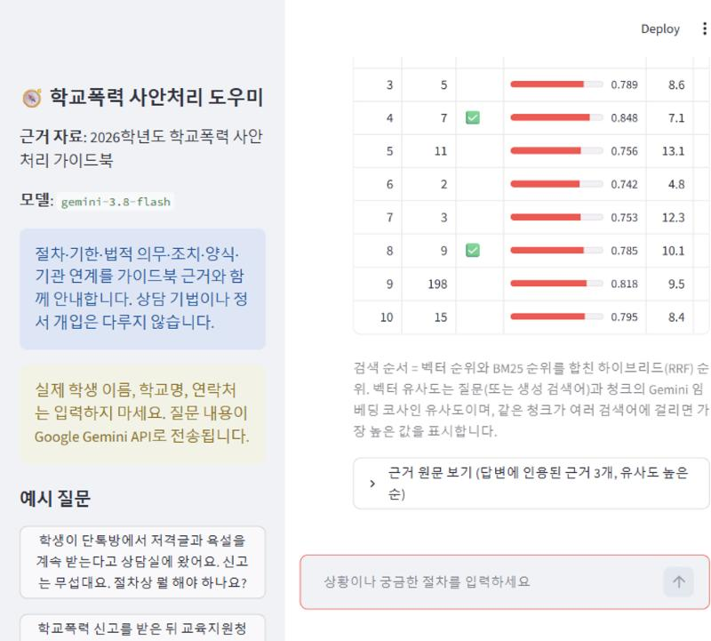
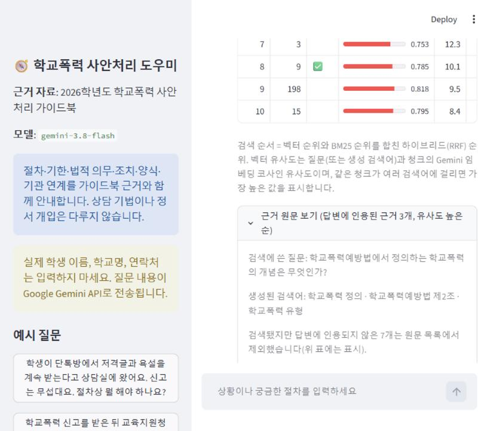
같은 쪽 청크 합쳐 보기
2026-10-16Gemini 노트북과 성능 비교
2026-10-16질문 1. "사안조사 보고서 작성 시 진술을 기록하는 방법을 알려주세요"
| 항목 | Gemini 노트북 | 이 챗봇 |
|---|---|---|
| 다룬 내용 | 3개 주제, 6개 이상 항목: 육하원칙, 시간 흐름에 따른 경위, 양측 주장 병기, 확인된 사실 기록, 쟁점별 구분 기재, 근거자료 출처·날짜 명시 | 3개 항목: 육하원칙, 가해사실 불인정·증언 거부 시 기록, 양측 주장 병기 |
| 근거 표시 | 번호 각주(①~⑥), 쪽 번호는 보이지 않음 | 문장마다 [p.45] 쪽 번호, 근거 표에 코사인·BM25·인용 여부 |
| 사용한 쪽 | 본문 + 사안조사 보고서 양식의 작성 요령(153~154쪽으로 추정) | 45, 47, 49, 50쪽 (153~154쪽은 검색되지 않음) |
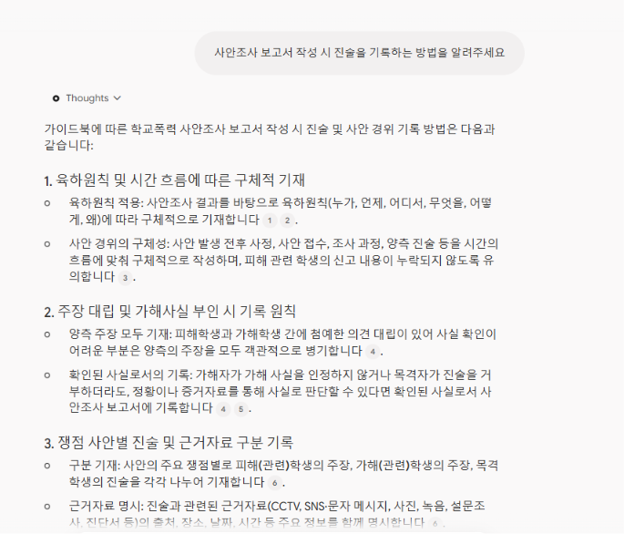
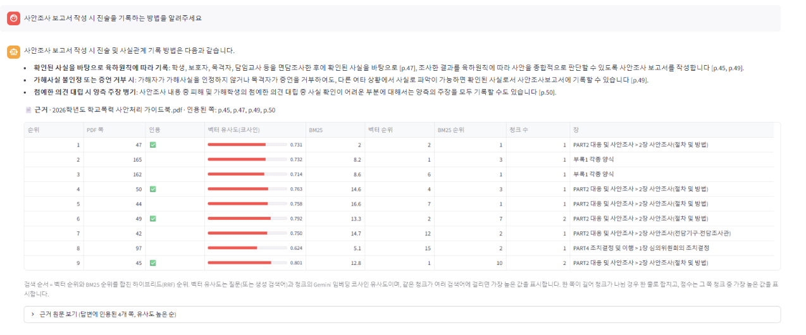
추가 질문 (이 챗봇 결과)
Gemini 노트북은 사용자 계정에서만 실행할 수 있어 아직 돌리지 못함. 아래 질문을 노트북에도 넣어 오른쪽 칸을 채우면 비교가 완성됨.
| 질문 | 이 챗봇 결과 | 원문 대조 | Gemini 노트북 |
|---|---|---|---|
| 2. 가해학생에게 내려질 수 있는 조치의 종류를 모두 알려주세요 | 제1~9호를 빠짐없이 나열, 특별교육 이수 의무(제17조제3항)와 학교장 긴급조치(제5항) 보충. 인용 p.110 | ✅ 110쪽 법 조문과 일치 | 확인 필요 |
| 3. SNS에 친구 얼굴을 합성한 딥페이크 영상이 퍼졌어요. 학교에서 어떻게 처리해야 하나요? | "피해학생 의사와 관계없이 수사기관 즉시 신고"를 맨 앞에. 8단계 절차(신고·대장·보고·분리·2호 조치·48시간 보고·삭제 지원), 112·117 안내. 인용 10개 쪽 | ✅ 33·37·104쪽 내용과 일치 | 확인 필요 |
| 4. 자해한 학생의 보호자 상담은 어떻게 해야 하나요? (범위 밖 질문) | 위기 경고 후 "가이드북에서 확인되지 않습니다". 지어내지 않음. 인용 0개 | ✅ 가이드북에 자해 내용 없음 | 확인 필요 |
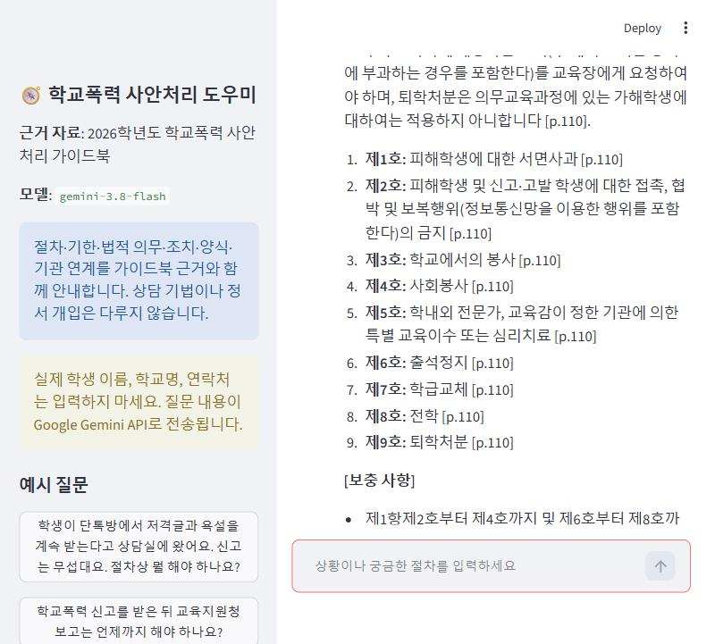
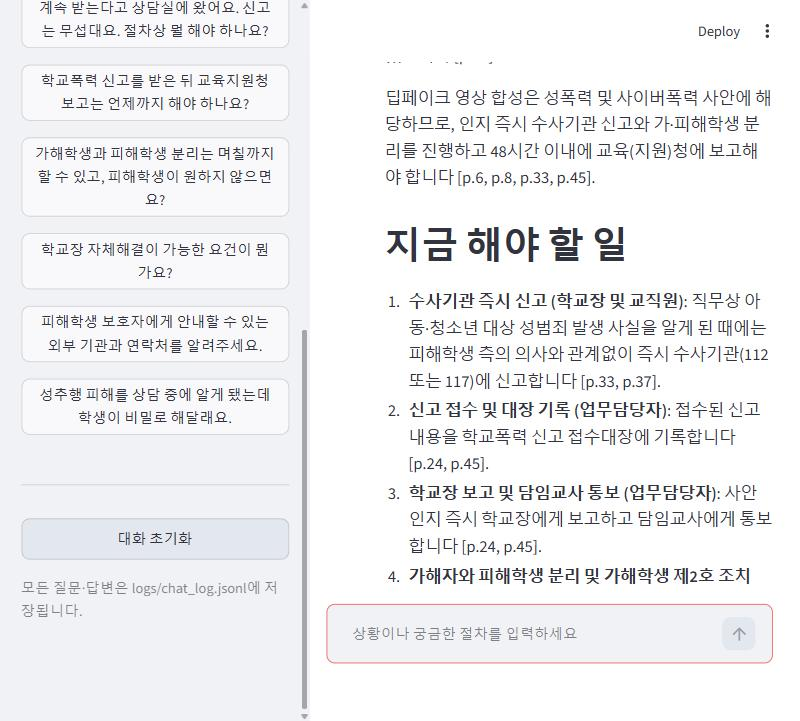
비교로 얻은 점
- 챗봇의 강점: 쪽 번호·유사도·로그로 근거를 검증할 수 있음, 법 조문 나열처럼 범위가 분명한 질문은 정확, 범위 밖 질문에 지어내지 않음
- 챗봇의 약점: 내용이 여러 쪽(본문 + 부록 양식)에 흩어진 질문은 일부만 찾아 답변이 짧아짐(재현율 문제)
- 개선 후보: 검색 개수 늘리기, 인용된 쪽의 앞뒤 쪽·관련 양식 함께 넣기, 양식 작성 요령을 본문과 연결, Gemini 긴 문맥에 문서 전체를 넣는 방식과 비교 실험
- 범위 밖 질문 개선: 자해 질문에 "학교폭력 제로센터 문의"를 권한 것은 맞지 않음 → 위기 질문은 Wee센터·1388(가이드북 28쪽) 등 위기 연계 기관을 안내하도록 수정 필요
다음 방향과 주제별 DB 설계
2026-10-16정한 방향 (순서대로)
- 특정 학교 학칙 반영: 학교마다 학칙이 다르므로 학교알리미 등에서 한 학교의 학칙을 받아 넣고, 그 학교에 맞게 답하도록 함
- 상담 기법으로 확장: 그 뒤 「사이버 비행 청소년 상담개입 매뉴얼」(한국청소년상담복지개발원, 2023) 등을 넣어 사이버폭력 상담 개입까지
- 자료 평가 에이전트: PDF 추가 시 최신성(판본·시행일), 출처 등급, 상담사 도움 정도에 더해 전문성 인증 여부(공공기관 발간, 학술지 심사 여부 등), 기존 자료와 충돌, 적용 지역, 텍스트 추출 품질, 개인정보, 주제 분류를 점검. 결과는 채택/조건부/제외로 내고 최종 등록은 상담사가 승인
주제별 DB 설계안
| 층 | 내용 | 예시 |
|---|---|---|
| 공통 DB | 모든 질문에서 함께 검색 | 법령, 기관 연락처, Wee 운영 가이드 |
| 주제 DB | 질문 분류 결과에 맞는 것만 검색 | 학교폭력 / 가정(아동학대·가정폭력) / 학업·학교부적응 / 정서·위기(자해·자살) / 디지털·사이버 |
| 학교 DB | 선택한 학교의 자료만 검색, 법령·지침보다 하위 | 학칙, 학교 위기관리 계획 |
- 문서 정보(documents): 문서 ID, 제목, 발행처, 출처 등급, 자료 유형, 주제(여러 개 가능), 적용 지역, 학교 ID, 판본·발행일·시행일, 대체한 구버전, 평가 결과
- 청크(chunks): 청크 ID, 문서 ID, 쪽, 장, 본문, 주제, 임베딩, 형태소 토큰
- 질문 흐름: 위기 신호 감지(최우선) → 주제 분류(여러 개 가능, 판단 근거 포함) → 원인별로 하위 질문 분해 → 주제 DB + 공통 DB 검색 → 주제별 섹션으로 답변 → 분류 결과까지 로그 저장
- 분류기 평가: 1단계에서 주제를 붙여 둔 우수사례 30건을 그대로 분류 정답 세트로 사용
이산중학교 학생생활규정 반영
2026-10-16바꾼 것
- 다중 문서:
rag.py의DOCS에 가이드북과 이산중 규정을 등록. 청크 372개(가이드북 313 + 이산중 59), 이산중은 쪽마다 '편 > 장' 이름을 자동 추출 - 문서별 검색: 가이드북 최대 12개 + 이산중 최대 4개 청크를 따로 뽑아 합침. 22쪽짜리 규정이 216쪽 가이드북에 밀려 빠지지 않게 하기 위함
- 인용 형식:
[가이드북 p.24],[이산중 p.5]. 근거 표에 "문서" 열 추가, 원본 쪽 이미지도 문서별로 표시 - 답변 규칙: 학교폭력은 법령·가이드북, 학교폭력이 아닌 생활지도 위반은 이산중 학생생활교육규정으로 구분. 관련 조항이 있으면 "## 이산중학교 규정" 섹션 추가, 내용이 다르면 법령 우선
- 예시 질문: 수업 중 상담과 비밀보장, 수업 방해 학생 처리, 출석정지 중 Wee센터 특별교육 3개 추가
테스트 결과
| 질문 | 인용 | 결과 |
|---|---|---|
| 수업 시간에 상담해도 되나요? 비밀은 어디까지? | 이산중 p.3·4 + 가이드북 6개 쪽 | 전문상담교사 상담은 수업 외 시간 원칙의 예외, 상담 내용 제3자 누설 금지(법령 예외)는 학교 규정으로, 학교폭력 비밀누설 금지(법 제21조)는 가이드북으로 나눠 답함 ✅ |
| 학교폭력은 아닌데 수업을 계속 방해하는 학생 | 이산중 p.5·14·15 | "학교폭력이 아닌 생활지도 위반"으로 구분하고 단계별 지도(훈육·훈계 → 인권친화적 생활지도 → 학부모 상담 → 학생생활교육위원회), 위원회 의결 정족수, 학교 내 봉사 1일 2시간·5일 이내를 안내. 원문 대조 일치 ✅ |
| 학교장 자체해결 요건 (학교폭력 질문) | 가이드북만 | 학교 규정 쪽도 검색은 됐지만 인용하지 않고 가이드북 근거로만 답함 ✅ |
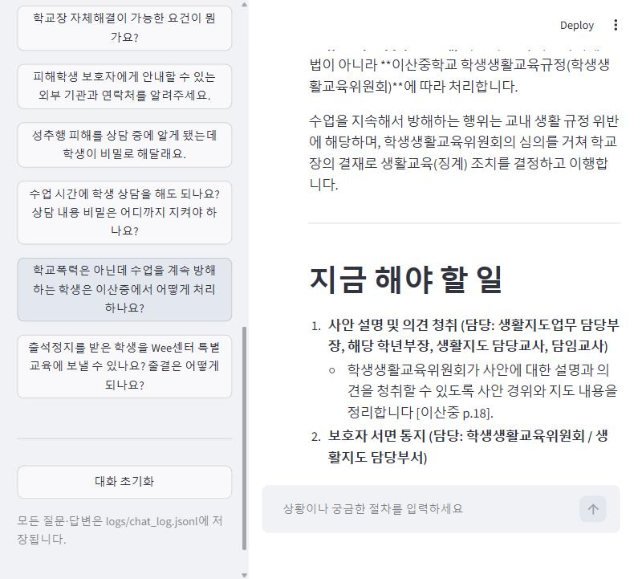
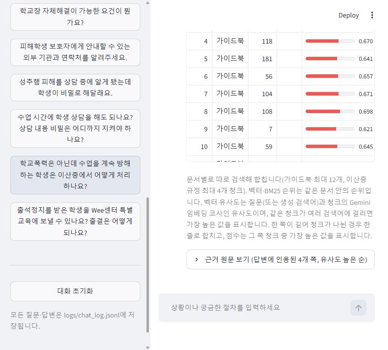
이산중 전용 챗봇으로 전환
2026-10-16SCHOOL_INFO)과 사이드바에 반영바꾼 것
- 확인 순서: 이산중 규정 → 가이드북. 검색도 이산중을 먼저(최대 6개 청크, 기존 4개에서 늘림), Gemini에 넘기는 자료도 이산중이 먼저
- 답변 규칙: "## 이산중학교 규정"을 먼저 쓰고 가이드북으로 보충. 관련 조항이 없으면 "이산중 규정에는 관련 조항이 없어 가이드북 기준으로 안내합니다"를 밝힘. 학교폭력 법정 절차는 가이드북 내용을 빠짐없이 함께 안내, 충돌 시 법령 우선은 유지
- 근거 표: 이산중·가이드북 구분 없이 벡터 유사도(코사인) 높은 순. 문서 안 순위 열(벡터 순위·BM25 순위)은 섞이면 헷갈려서 뺌
- 화면: 제목·사이드바를 "이산중학교 사안처리 도우미"로, 학교 정보와 확인 순서 표시, 예시 질문을 학교 규정 질문부터 배치. 굵은 글씨 뒤에 조사를 붙이지 않도록 규칙 추가
테스트 결과
| 질문 | 결과 |
|---|---|
| 출석정지 학생을 Wee센터 특별교육에 보낼 수 있나요? 출결은? | 이산중 규정(p.16: Wee센터 위탁 특별교육, 학부모 동행, 출석정지 기간은 미인정결석으로 기재·특기사항에 사유 미기재)을 먼저, 가이드북(p.59·114)을 보충. 원문 대조 일치 ✅ |
| 학교폭력 신고 후 교육지원청 보고 기한 | "이산중 규정에는 관련 조항이 없어 가이드북 기준으로 안내합니다" 후 48시간 이내 보고 [가이드북 p.24·37] ✅ |
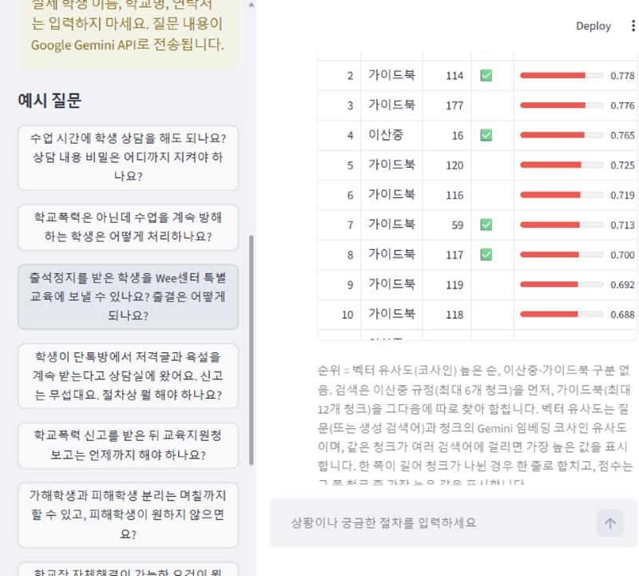
성능 개선: Gemini 노트북 수준 이상으로
2026-10-18측정 방법
- 평가 세트
eval/eval_set.json: 질문 11개(법·절차 7, 학교 규정 3, 범위 밖 1)마다 원문으로 확인한 정답 쪽과 핵심어. Q1은 노트북 답변 6개 항목을 핵심어로 사용 - 지표: 검색 재현율(정답 쪽이 Gemini에 넘어갔나), 인용 재현율(정답 쪽을 인용했나), 핵심 내용 포함률(핵심어 묶음이 답변에 있나)
- 노트북형 기준선: 노트북은 직접 돌릴 수 없어서, 검색 없이 문서 전체(26만 자)를 Gemini에 넣는 방식(
--full)을 노트북과 같은 조건의 기준선으로 측정
개선 내용
- 양식 연결: 검색된 본문이
<양식2-4>처럼 부록 양식을 가리키면 그 양식의 앞 2쪽을 함께 넣음 → Q1에서 놓치던 153·154쪽(사안조사 보고서 작성 요령: 시간 흐름, 쟁점별 구분, 근거자료) 확보 - 검색 폭 확대: 가이드북 최대 12 → 24청크, 이산중 6 → 12청크
- 답변 규칙: 여러 쪽에 흩어진 내용을 빠짐없이 모으고, 기한·횟수·예외 조건 숫자를 빠뜨리지 않도록 지시
결과 (질문 11개, 핵심 내용 포함률)
| 버전 | 검색 재현율 | 인용 재현율 | 핵심 내용 포함률 | 평균 시간 |
|---|---|---|---|---|
| 개선 전(기존 RAG) | 86.7% | 83.3% | 79.4% | 15.7초 |
| 노트북형 기준선(문서 전체) | 100% | 91.7% | 90.0% | 17.6초 |
| v4 (양식 연결 + 검색 확대) | 88.3% | 85.8% | 89.7% | 20.6초 |
| v5 (검색 더 확대 + 숫자 규칙) | 96.7% | 93.3% | 90.3% | 19.4초 |
| v6 (양식 3개까지) | 100% | 94.2% | 89.7% | 21.6초 |
상담 기법 매뉴얼 추가
2026-10-18자료 선정 (평가 기준 적용)
| 후보 | 최신성 | 출처·전문성 | 학교폭력 관련성 | 상담사 도움 | 결정 |
|---|---|---|---|---|---|
| 사이버 비행 청소년 상담개입 매뉴얼 | 2023 | 한국청소년상담복지개발원, 현장 전문가 162명 조사·9명 FGI·전문가 평가 | 사이버폭력 가해 | 12회기 개인상담 단계·활동 | 채택 |
| 디지털 미디어 위기 청소년 유형 및 개입 매뉴얼 | 2024 | 한국청소년상담복지개발원, 델파이 22명·FGI | 디지털 미디어 폭력 피해·가해 | 피해 청소년 효과적 개입(인지·정서·행동) | 채택 |
| 학교 위기대응 안내서(PFA-S) | 2024 | - | '학교폭력' 언급 0회 | 위기 심리지원 | 보류(위기 대응 단계에서) |
| 또래 괴롭힘 관련 학술 논문 | 2013 | 학술지 | 높음 | 연구 결과라 실무 지침 아님 | 제외 |
바꾼 것
- 문서 4개: 이산중 → 가이드북 → [사이버상담] → [디지털상담] 순서. 청크 696개. 매뉴얼은 책갈피가 없어 인쇄 목차와 쪽 차이(+8, +10)로 장 이름을 붙임
- 검색: 매뉴얼마다 최대 7청크. 연구방법·델파이·전문가 평가·참고문헌 쪽은 상담 내용이 아니라서 순위를 낮춤
- 답변 규칙: 상담 방법을 묻거나 필요할 때만 "## 상담 개입 참고" 섹션을 매뉴얼 근거로 작성. 매뉴얼은 청소년상담복지센터 기준이라 학교에 맞게 조정이 필요하다는 안내 포함. 자해·자살 상담은 자료에 없으므로 다른 상황의 요령을 옮겨 쓰지 않음
- 평가 질문 3개 추가: 사이버폭력 가해 학생 회기 구성, 피해 학생 개입, 단톡방 저격 가해 학생(절차+상담)
결과 (v8, 질문 14개)
| 구분 | 검색 재현율 | 핵심 내용 포함률 |
|---|---|---|
| 법·절차·학교 규정 Q1~Q11 | 98.3% | 86.7% (v6 89.7%, 실행 편차 범위) |
| 상담 기법 Q12~Q14 | 61.1% | 94.4% |
- 상담 질문의 검색 재현율이 낮은 것은 매뉴얼이 같은 내용을 여러 쪽(개요표·세부 설명·최종 구성)에 반복해서, 정답으로 정한 쪽 대신 옆쪽을 인용했기 때문. 답변 내용(핵심 포함률 94%)은 정확함
- 자해 학생 보호자 상담(Q11): 처음엔 학교폭력 보호자 상담 요령을 끌어와 답함 → 규칙 수정 후 "확인되지 않습니다" + Wee센터·1388 연계로 정확히 답함
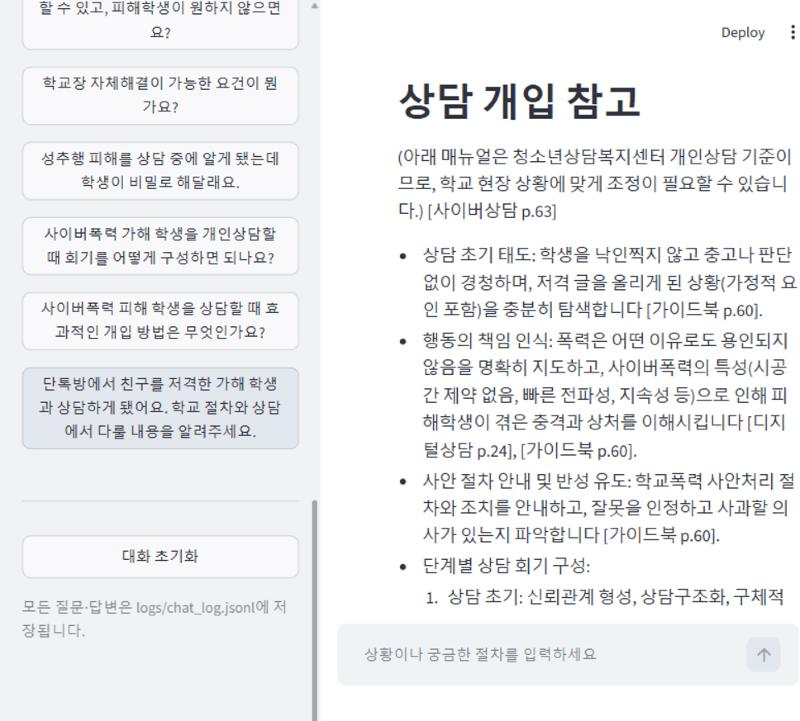
질문 유형별 라우팅
2026-10-18두 답변 비교
| 항목 | Gemini 노트북 | 이 챗봇(라우팅 전) |
|---|---|---|
| 질문 의도 맞춤 | ◎ 학생에게 할 말(한 줄 정의·비유·예시·핵심 2가지) | △ 학교 규정 → 학술적 정의 순서, 학생용 문장은 2줄 |
| 근거 표시 | ✕ 없음 | ◎ 줄마다 쪽 번호 |
| 자료 충실도 | ○ 예시 대부분이 사이버상담 p.14~15 유형표, p.46·49, 가이드북 p.9와 일치. "디지털 기록이 남아 찾아낼 수 있다"는 자료에서 확인 안 됨 | ◎ 모두 자료 근거 |
| 학교 맞춤 | ✕ | ○ 이산중 제37조 정보통신예절(다만 맨 앞에 와서 흐름을 끊음) |
구현: 질문 유형 → 확인 순서 → 답변 형식
- 검색어 생성 호출에서 유형도 함께 분류(추가 호출 없음). 유형마다 1순위 문서에 검색 몫을 가장 많이 주고, Gemini에 넘기는 자료도 그 순서로 배치
- 학교 맞춤형: 이산중 → 가이드북 → 매뉴얼 / 학교폭력 절차·법: 가이드북 → 이산중 → 매뉴얼 / 용어 정의: 가이드북 → 사이버상담 → 디지털상담 → 이산중 / 상담 가이드·학생 눈높이 설명: 사이버상담 → 디지털상담 → 가이드북 → 이산중 / 위기: 자료 없음 안내 + 연계
- 유형마다 답변 형식 지정. 학생 눈높이 설명은 학생에게 읽어 줄 문장(따옴표)을 허용하되 자료의 정의·유형·사례만 쉬운 말로 바꾸고 줄마다 근거
- 이산중 규정은 학교 맞춤형에서만 맨 앞, 다른 유형에서는 관련 조항이 있을 때만 한 줄
- 화면: 답변 위에 "🔎 질문 유형 · 확인 순서" 표시, 사이드바에 유형별 확인 순서
결과
| 항목 | 라우팅 전(v8) | 라우팅 후(v9) |
|---|---|---|
| 기존 질문 14개 핵심 포함률 | 88.3% | 91.1% |
| 학생 눈높이 설명(Q15) / 용어 정의(Q16) | - | 100% / 100% |
| 유형 분류 정확도(16개) | - | 93.8% → 설명 보강 후 100% |
v9 수치는 전체 실행 결과에 Q10·Q14·Q15·Q12·Q13 재실행(유형 설명·상담 경로 보강 후) 결과를 합친 값
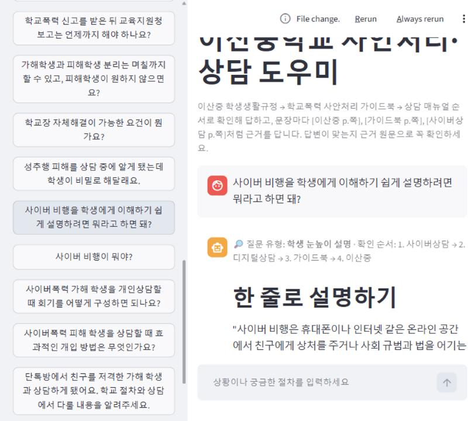
참고자료 타당성 평가 에이전트와 자료 추가
2026-10-18평가 기준 12개 (doc_agent/criteria.json)
1 최신성 · 2 출처 명확성 · 3 전문성 인증 · 4 상담사 활용성 · 5 중복·충돌★ · 6 적용 지역 · 7 자료 유형 · 8 구체성 · 9 텍스트 추출★ · 10 개인정보★ · 11 주제 분류(정보) · 12 이용 조건 (★ 필수 기준)
에이전트 흐름
- 자동 측정(Python): 쪽당 글자 수, 글자 없는 쪽 비율, 표지 연도·발행처, 개인정보 패턴, 지역, 주제 키워드, 기존 자료와 본문 임베딩 유사도
- Gemini 판단: 측정값 + 표지·목차·본문 표본 쪽을 읽고 기준마다 0/1/2점과 근거(쪽 번호), 인용 이름·역할·사용할 질문 유형·주의할 점 제안
- 최종 판정(코드로 강제): 필수 기준 0점 또는 55% 미만 → 비추천 / 75% 이상이고 0점 기준 없음 → 추천 / 그 사이 → 조건부. 점수 누락은 0점
- 상담사 승인 → 등록: 조건부는 주의 확인, 비추천은 사유 입력 후에만 추가 가능. 등록하면 그 자료 청크만 임베딩해 인덱스에 덧붙임(전체 재생성 없음). 해제도 화면에서
기존 후보 PDF 6개 판정
| 자료 | 판정 | 점수 | 사유 |
|---|---|---|---|
| 2024 학교 위기대응 안내서(PFA-S) | ✅ 추천 | 100% | 교육부·학생정신건강지원센터, 2024 개정, 전문가 집필·자문, 공개 자료 |
| 2025 Wee 클래스 및 센터 운영 가이드 | ⚠️ 조건부 | 93.8% | 내용은 우수하나 "무단전재·복제 금지"(이용 조건 0점) |
| 25 Wee 희망대상 우수사례집 | ⚠️ 조건부 | 78.1% | 사례집(자료 유형 0점), 무단전재 금지. 이름은 ○○로 가려져 있음 |
| 단위학교 위기관리 가이드라인(서울시교육청) | ⚠️ 조건부 | 78.1% | 2021년·서울 지역 자료, 활용성 판단 누락 → 0점 처리 |
| 2025 학교폭력 사안처리 가이드북 | ❌ 비추천 | 71.9% | 필수 기준 미달: 등록된 2026판의 구버전(본문 유사도 최대 0.976) |
| 또래 괴롭힘 대처행동 매개효과 논문(2013) | ❌ 비추천 | 46.9% | 10년 이상 된 학술 논문, 실무 지침 아님, 저자 이메일 노출 |
- 위기(자해·자살) 유형에 쓰도록 등록된 자료는 위기 질문에서 1순위로 확인하도록 함(기본 자료에는 위기 대응 자료가 없기 때문)
- 답변 규칙 10을 "등록된 위기 대응 자료가 있으면 그 절차만 근거로, 없으면 확인되지 않는다고 안내"로 바꿈
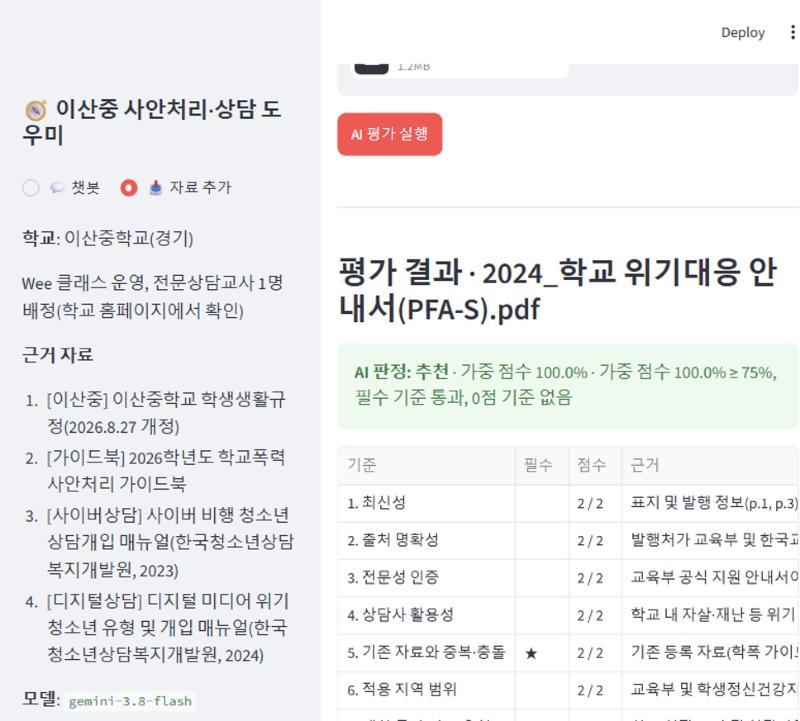
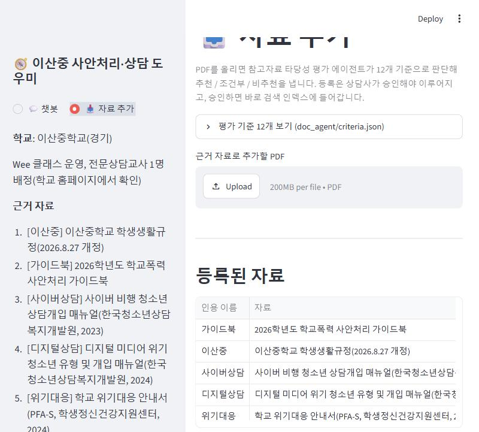
자료 저장소(DB) 전환·삭제·학기별 점검
2026-10-19이전 방식의 문제
- 기본 4개 자료는 코드에 고정, 추가 자료는 registry.json → 목록이 두 곳
- 청크는 chunks.json, 임베딩은 embeddings.npy → 두 파일의 행 순서가 같아야 하고 트랜잭션이 없음. 추가·삭제마다 파일 전체를 다시 씀
- 층·주제·평가 이력·알림을 담을 곳이 없음, 같은 PDF를 이름만 바꿔 올리면 막지 못함
설계: SQLite 한 파일 + 층·주제 꼬리표 (docs/DB_설계.md)
- DB 선택: SQLite(설치 없음, 트랜잭션, CASCADE 삭제). 벡터 검색은 메모리(numpy). 여러 학교·사용자 서버로 갈 때 같은 표 구조로 PostgreSQL + pgvector
- 표: documents(층·종류·학교·발행 연도·상태·파일 해시) / doc_topics / doc_qtypes / chunks(본문·형태소·임베딩) / reviews(입고·정기 평가) / alerts(사용 전 알림) / schools / meta
- 층과 주제: 물리적으로 나누지 않고 꼬리표로 거름. 질문 유형과 함께 질문 주제(0~3개)도 판단해, 추가 자료는 층이 공통·학교이거나 주제가 겹칠 때만 확인
- 이전: 기존 청크 696개와 임베딩을 다시 계산하지 않고 그대로 옮김. 옛 파일은 index/legacy_backup/
자료 생애
| 동작 | 결과 |
|---|---|
| 추가 | 파일 해시로 같은 PDF 차단 → 평가·승인 → 한 트랜잭션으로 등록, 임베딩 실패 시 되돌림. 평가의 주의할 점은 알림으로 |
| 사용 중지 / 다시 사용 | 검색에서만 뺌(기본 자료도 가능) |
| 완전 삭제 | 확인 체크 후 문서·청크·평가 기록·알림 CASCADE 삭제 + data/·inbox/의 PDF 삭제. 기본 4개 자료는 불가 |
| 다시 평가 | 등록 자료 탭에서 한 자료만 즉시 재평가 |
학기별 정기 점검과 사용 전 알림
- 182일마다 모든 활성 자료 재평가(오늘 날짜 기준 최신성, 자기 자신은 중복 비교에서 제외) → 직전 평가와 비교해 🔴 긴급(비추천 전환·파일 없음) / 🟠 주의(판정 하락·새 0점·최신성 하락·발행 3년 경과·법령 시행일 이후 확인 필요) / 🔵 참고(주의할 점)
- 앱을 열 때 점검 시기가 지났으면 백그라운드로 자동 점검. 앱을 열지 않아도 되도록 run_review.bat을 작업 스케줄러에 등록하는 방법을 README에 정리(등록은 하지 않음)
- 알림 위치: 챗봇 사이드바 "🔔 자료 유의사항 N건", 답변이 인용한 자료에 주의·긴급 알림이 있으면 답변 아래 "사용 전 확인", 자료 관리의 알림 목록에서 "확인함"
- 자료 관리 화면의 탭이 선택할 때마다 첫 탭으로 돌아가는 문제를 고침(선택이 유지되는 메뉴로 변경)
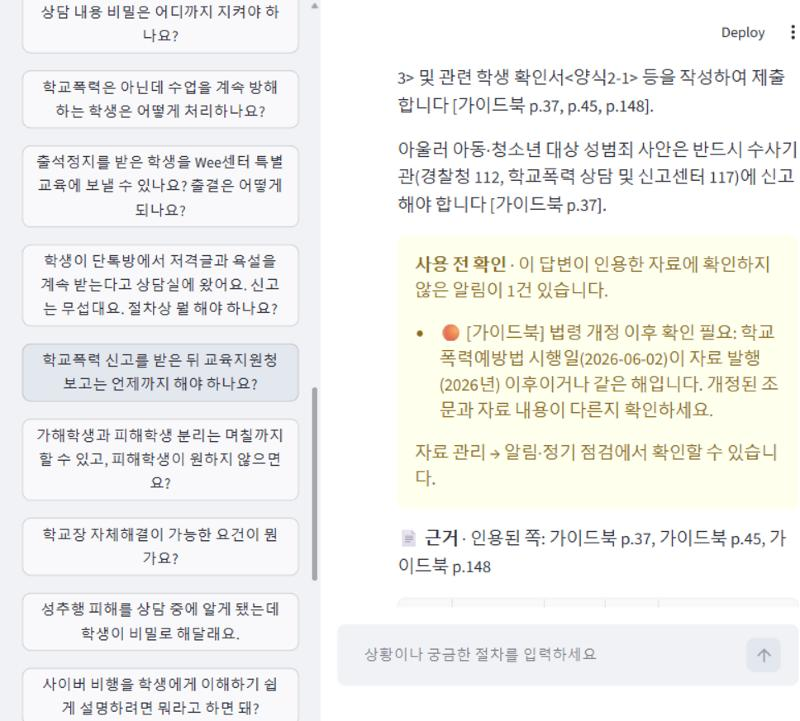
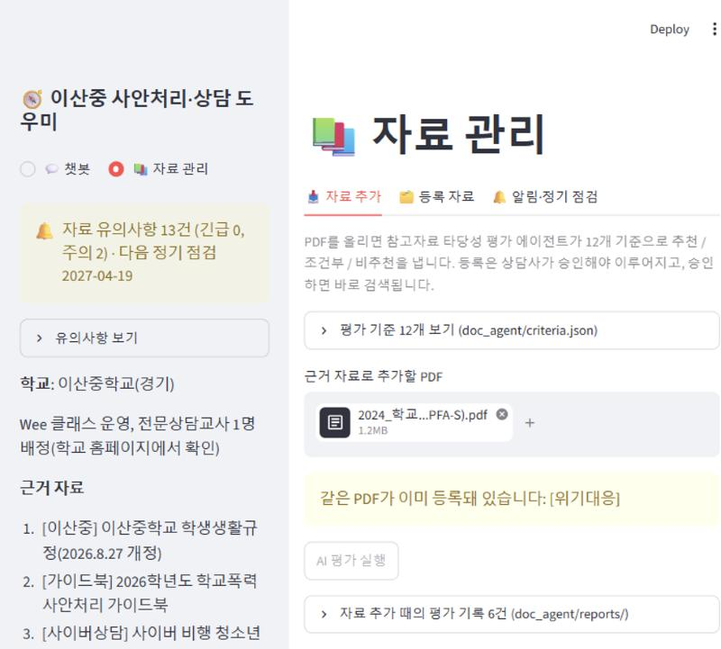
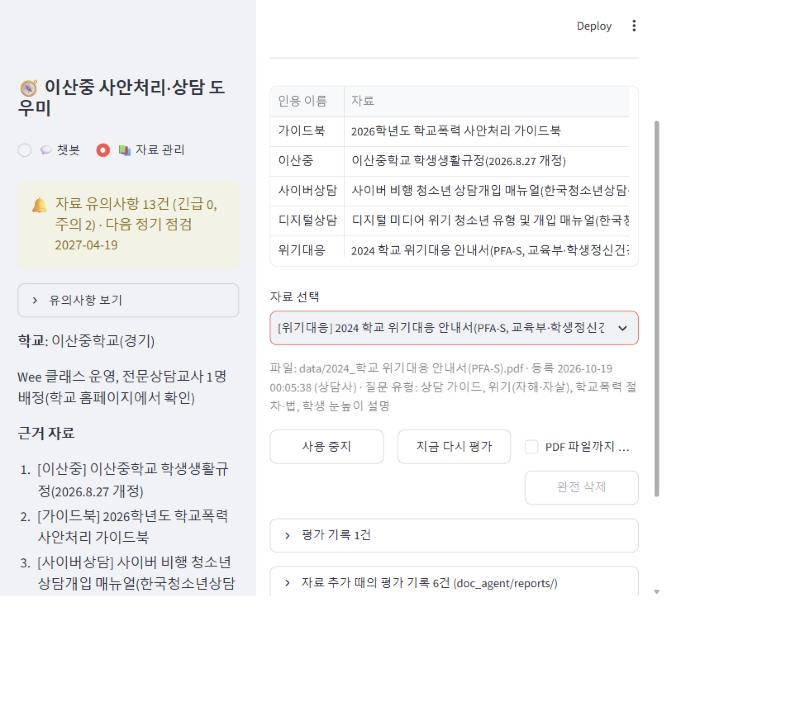
알림 아이콘, 학업중단 숙려제 매뉴얼, 지역 연계 기관
2026-10-19🔔 알림 아이콘
- 사이드바 제목 옆 🔔 버튼 오른쪽 위에 확인하지 않은 알림 수를 빨간 배지로 표시(0건이면 숨김, 정기 점검 중이면 파란 점)
- 누르면 별도 "알림·정기 점검" 화면(점검 현황, 지금 점검 실행, 알림 목록과 확인함). 자료 관리에서는 이 탭을 빼고 자료 추가·등록 자료만 남김
학업중단 숙려제 운영 매뉴얼(학업·학교부적응 주제의 첫 절차 자료)
- 경기도교육청 누리집에서 「2026 학업중단 숙려제 운영 매뉴얼」(75쪽) 확인: 적용 대상·기간(1~7주)·출결, 학업중단 예방 위원회, 나이스 등록, Q&A, 서식, 지원 기관 안내
- 사용자가 자료 관리에서 평가 후 등록 → [학업숙려제] 청크 91개. 이산중 학생생활규정 제40조도 "경기도교육청 학업중단 숙려제 운영 매뉴얼에 따른다"고 정해 두어 학교 규정과 바로 이어짐
지역 연계 기관: 화성시청소년상담복지센터
- 사용자가 찾은 기관을
rag.LOCAL_AGENCIES에 등록: 전화 031-225-1318, 031-267-8771 · 팩스 031-267-8774 · 화성시 태안로 145 유앤아이센터 2층(병점동). 출처는 2025 청소년상담복지센터 현황(2025.10) CSV와 대조(사용자 메모의 031-267-8774는 CSV에서 팩스 번호) - 답변 규칙 8-1: 자료가 청소년상담복지센터나 외부 상담기관 연계를 안내하면 일반 명칭 대신 이 센터를 이름·전화와 함께 안내하고 [지역기관]을 단다. 연계 근거는 원래 자료의 쪽 번호로 달고, Wee센터·경찰·아동보호전문기관은 이 센터로 바꾸지 않음
- 사이드바에 "연계 기관" 표시, 학교 이름을 "이산중학교(경기 화성시)"로
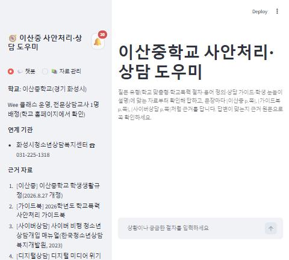
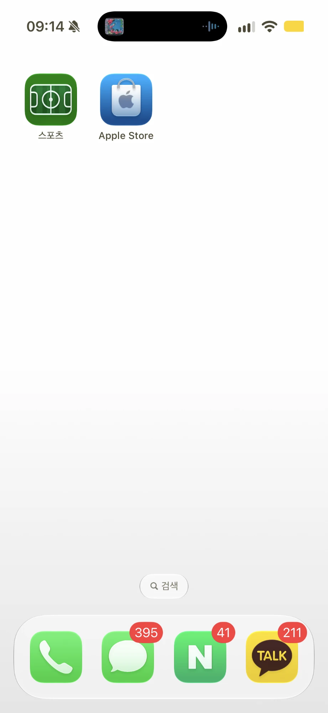
자료 추가 중복 오류와 답변 화면 읽기 쉽게
- 정서행동 매뉴얼 등록 때 "인용 이름이 이미 쓰고 있습니다" 오류: 실제로는 첫 요청에서 등록 완료(청크 246개), 같은 요청이 한 번 더 들어간 것. 같은 PDF면 완료로 처리, 이름 중복은 버튼 누르기 전에 표시하고 대체 이름(예: 정서행동2026) 제안
- 답변 본문 글씨 1.25배, 첫 줄 요약은 파란 강조 상자, 소제목 크기 축소, 근거 표시 [자료 p.쪽]는 작은 회색 글씨로
- 답변 규칙 12: 항목마다 핵심(해야 할 행동·기한 숫자·담당·기관명·법정 의무)만 굵게, 섹션 안 묶음은 번호 목록 대신 ### 소제목
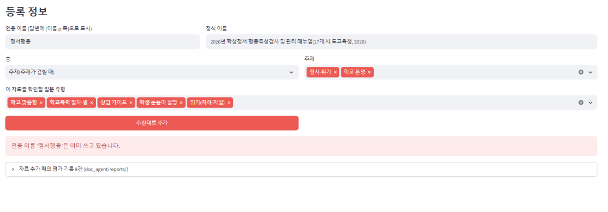
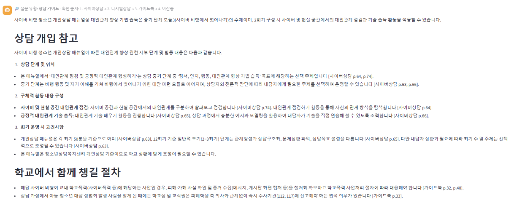
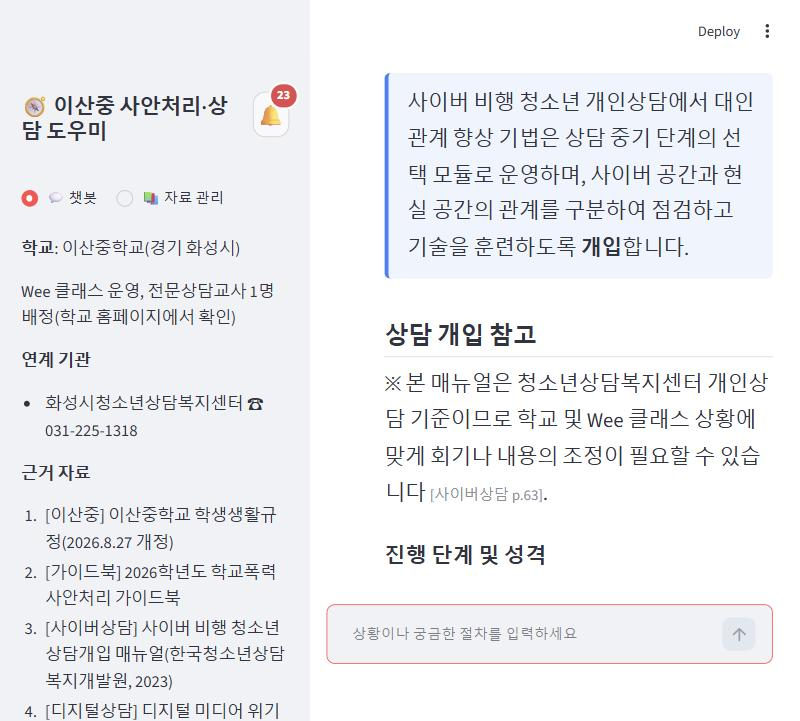
본문 기반 중복 확인과 개정판 교체
2026-10-19이전 방식
- 업로드 때는 파일 바이트(sha256)가 완전히 같을 때만 막음 → 다시 저장·인쇄한 PDF나 개정판은 못 알아봄
- 평가 에이전트의 중복 기준은 파일 이름 유사도와 본문 표본 임베딩을 보지만 AI 판단에만 쓰이고, 이전 판을 정리하는 기능은 없었음
본문 비교 (doc_agent/dedupe.py, API 호출 없음, 1초 안팎)
- 숫자·연도를 지운 단어 4개 묶음 집합으로 새 자료 중 겹침과 등록 자료 중 겹침을 잼(기한 숫자·연도만 바뀐 문장도 같은 문장으로 봄) + 표지 연도와 등록 발행 연도 비교
- 판단: 같은 자료(바이트 동일 또는 양쪽 85% 이상·같은 연도 → 평가 차단) / 개정판(30% 이상 겹침·연도 더 최근) / 구버전(더 오래됨, 추가하지 않길 권함) / 일부 겹침
| 실제 PDF로 확인 | 새 자료 중 겹침 | 등록 자료 중 겹침 | 판단 |
|---|---|---|---|
| 2025 학교폭력 가이드북 → 등록된 2026 | 88% | 82% | 구버전 |
| 2025 정서행동 매뉴얼 → 등록된 2026 | 26% | 54% | 구버전 |
| 2025 Wee 가이드 → (테스트로 등록한) 2024 | 63% | 48% | 개정판 |
| PFA-S ↔ 서울 위기관리 가이드라인(관련 없음) | 3% | 3% | - |
개정판 교체 (ingest.replace_edition)
- 개정판이면 등록 정보 위에 "이전 판 처리" 선택: 교체(권장) / 이전 판 사용 중지 후 새 자료로 추가 / 둘 다 유지
- 교체는 "이전 판을 삭제하고 이 판으로 바꾸는 데 동의합니다" 체크를 해야 버튼이 켜짐(사용자 최종 판단)
- 유지: 인용 이름·질문 유형별 확인 순서·평가 이력 / 교체: 파일·제목·연도·청크 / 삭제: 이전 판 PDF(data/·inbox/), 이전 판 청크, 이전 판 열린 알림(확인 처리) / 새로 "개정판으로 교체됨" 알림
- 새 판 임베딩을 먼저 만든 뒤 한 번에 바꾸므로 중간에 실패하면 이전 판이 그대로 남음. 기본 자료(가이드북 등)도 교체 가능: 2026학년도 판 전용 장 구간표는 새 판에서 자동으로 일반 규칙으로 바뀌고, 답변 규칙의 자료 이름도 새 제목으로 채워짐
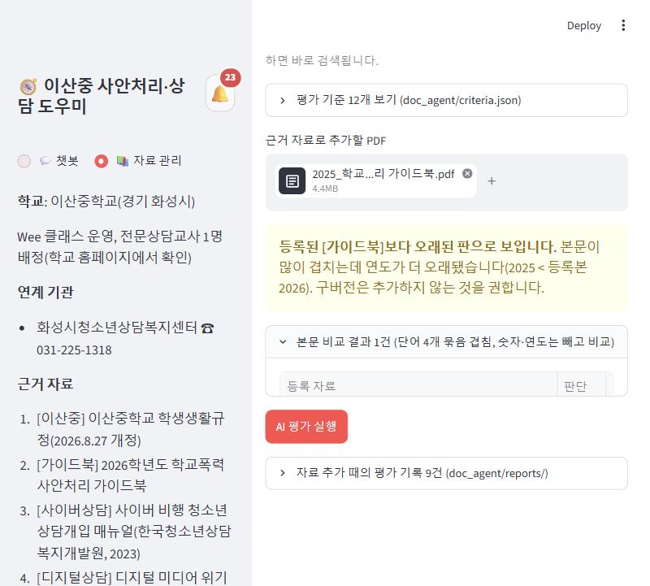
기본 자료 완전 삭제 열기와 빈 자리 등록
- 요청: 2026 가이드북을 지우고 → 2025 판 업로드 → 2026 판 업로드로 교체 결과를 직접 확인하고 싶음
- 기본 자료도 완전 삭제 가능. 단, 인용 이름(예: 가이드북)을 직접 입력해야 버튼이 켜짐. 지우면 질문 유형별 확인 순서·답변 규칙의 자료 줄에서 빠짐(없는 자료를 인용하지 않게 인용 파싱도 고침)
- 지운 기본 자료 자리는 비어 있고, 자료 추가에서 "등록 위치: 기본 자료 자리 [가이드북]"을 고르면 원래 ID·이름으로 들어가 확인 순서·양식 연결이 되살아남
- 사전 확인(코드, 저장소 백업 후 복원): 2026 삭제 → 확인 순서에서 가이드북 빠짐 → 2025를 빈 자리로 등록(청크 324, 절차 질문 1순위 복귀) → 2026 업로드 시 개정판(겹침 83%/87%) → 교체 후 청크 313·장 이름·부록 양식 구간이 처음과 같음, 2025 PDF 삭제
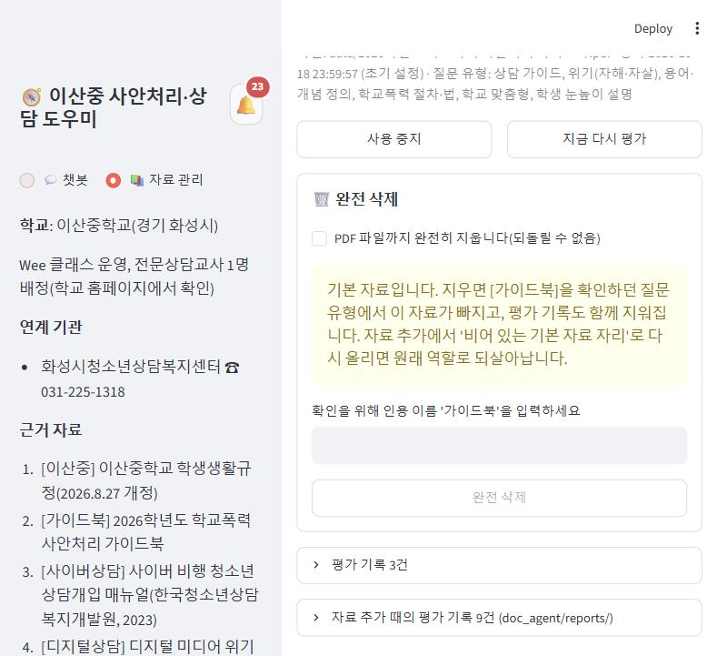
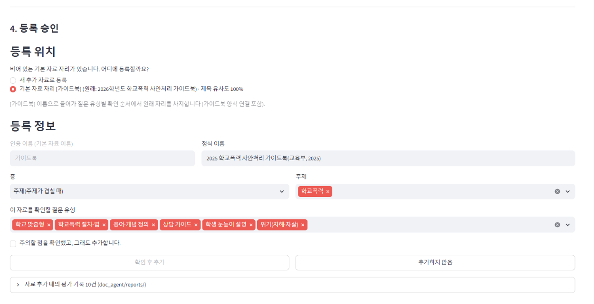
사용자 시험에서 나온 문제: 2026 판이 "일부 겹침"으로 나옴
- 원인: 2025 가이드북은 표지가 그림이라 표지 글자에서 연도를 못 읽어, 등록할 때 발행 연도가 비어 있었음 → 비교 때 연도를 몰라 "연도로 판을 구분할 수 없음"
- 수정: 등록·교체 때 연도를 표지 글자 → 파일 이름 → 제목 순으로 찾음. 비교 때 등록 자료 연도가 비어 있으면 제목·파일 이름에서 찾음. 현재 [가이드북] 기록에 2025를 채움 → 같은 업로드가 "개정판(2025 → 2026), 겹침 83%/87%"로 나옴
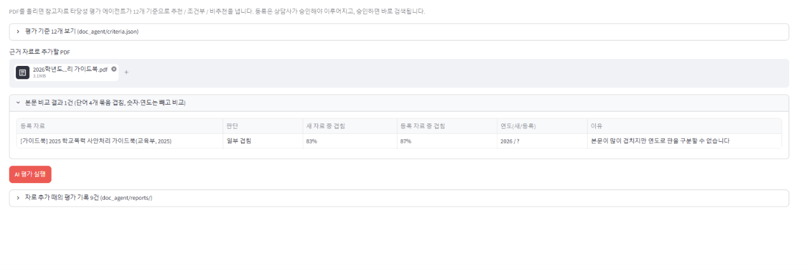
화면 글자 1.25배와 자료 추가 단계 표시
.streamlit/config.toml의baseFontSize = 20으로 화면 전체 글자 16px → 20px(표 포함). 답변 본문은 화면 글자보다 조금만 크게 다시 맞춤- 자료 추가를 "1 PDF 올리기 → 2 중복·판 확인 → 3 AI 평가 → 4 등록 승인" 단계 표시줄로 나눔(지난 단계 ✓, 지금 단계 파란색)
- 중복·판 확인은 표 대신 카드: 판단(🟥 이미 등록 / 🟦 개정판 / 🟧 구버전 / ⬜ 일부 겹침), 비교 대상, 발행 연도(올린 → 등록), 양쪽 겹침 비율, 다음에 할 일을 한눈에
- 다른 파일을 올리면 이전 평가 결과가 남아 보이던 문제도 고침
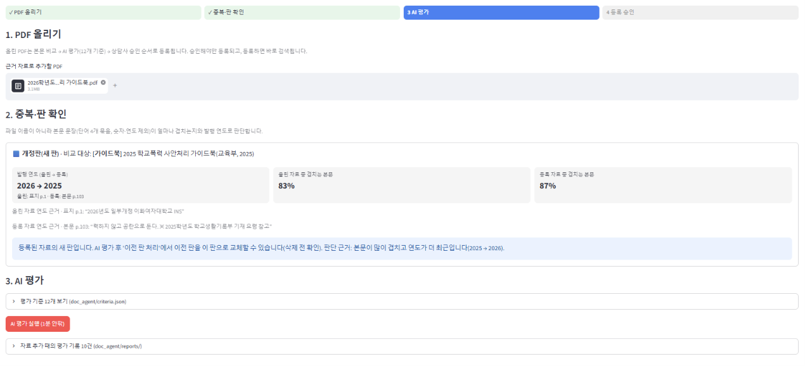
발행 연도를 PDF 본문에서 찾고 출처 표시
- 질문: "2026년판인지는 본문 내용으로 확인한 것인가?" → 같은 자료의 다른 판인지는 본문으로 판단했지만, 2025 판 연도는 표지가 그림이라 파일 이름·제목에서 읽은 것이었음
- 연도 찾는 순서: 표지(1쪽) → 발행 정보(마지막 3쪽) → 본문 표현("20xx학년도", "20xx년 개정·발행·시행") → 등록 정보 → 파일 이름 → 제목. 2~3쪽은 "2023년에 개발한 ○○ 가이드"처럼 다른 자료 이야기가 있어 표지로 보지 않음
- 등록할 때 저장하는 연도도 같은 순서(평가 에이전트가 앞 6쪽에서 읽은 연도보다 PDF 글자를 먼저)
- 비교 카드에 "올린: 본문 p.103 · 등록: 표지 p.1"처럼 출처와 그 문장을 보여 주고, 파일 이름·제목·등록 정보에서 읽은 연도면 ⚠️ 확인 요청
| PDF (파일 이름 없이 글자만) | 찾은 연도 | 출처 |
|---|---|---|
| 2025 학교폭력 가이드북(표지 그림) | 2025 | 본문 p.103 "2025학년도 학교생활기록부 기재 요령" |
| 2026 학교폭력 가이드북 | 2026 | 표지 p.1 "2026년도 일부개정" |
| 2024 Wee 가이드(이전에는 2023으로 잘못 읽음) | 2024 | 본문 p.35 |
| 2025·2026 정서행동, 2025 Wee, PFA-S, 2026 아동학대 | 각 연도 맞음 | 표지 p.1 |
| 서울 위기관리 가이드라인 | 없음 | PDF·파일 이름 어디에도 연도 없음 |
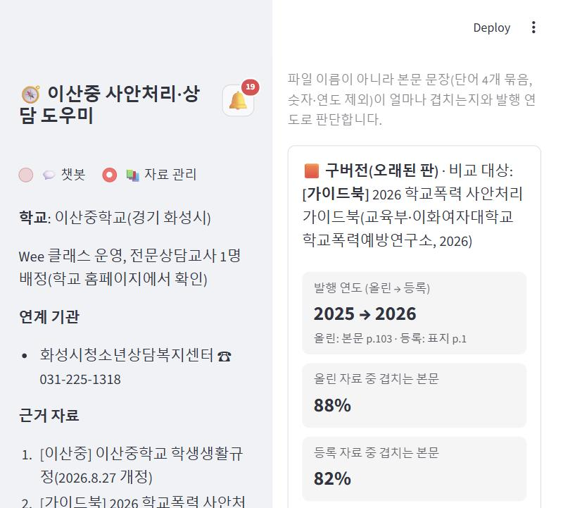
등록 후 "이미 등록된 자료"로 보이던 문제 → 완료 화면
- 사용자 시험: 2025 판을 빈 기본 자리로 평가·등록 → 화면이 "🟥 이미 등록된 자료, AI 평가를 막았습니다"로 바뀜. 실제로는 등록 성공(청크 324, 연도 2025)
- 원인: 성공 메시지는 화면 맨 위에 한 번만 뜨고, 올린 PDF가 업로드 칸에 남아 방금 등록한 자료와 다시 비교됨
- 수정: 등록·교체가 끝나면 업로드 칸을 비우고 완료 화면(4단계 모두 ✓, "✅ 등록 완료: [가이드북] · 청크 324개 임베딩", 교체면 이전 판 연도·삭제한 파일·알림 안내)을 보여 줌. "다른 자료 추가하기" / "등록 자료에서 확인" 버튼. 단계 안 소제목(평가 결과·등록 위치·등록 정보·이전 판 처리)은 단계 제목보다 작게
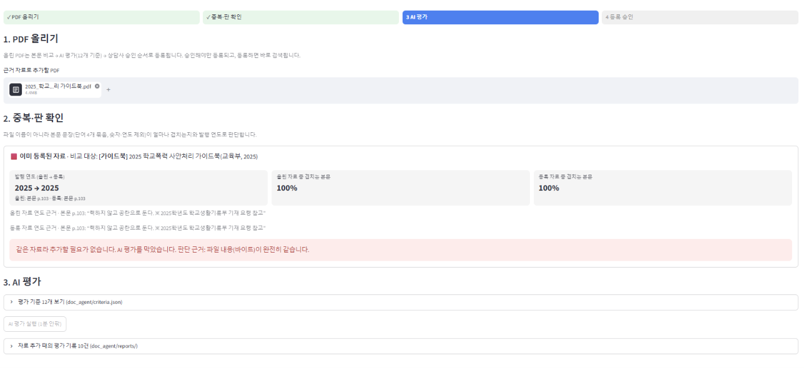
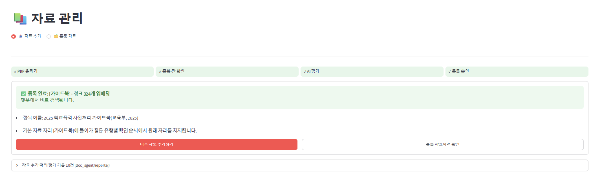
사용자 화면 시험: 2025 → 2026 가이드북 교체 (성공)
- 2026 가이드북 완전 삭제 → 2025 판을 빈 기본 자리로 평가·등록(조건부 93.8%, 이용 조건 0점) → 2026 판 업로드 시 개정판 → AI 평가 → 이전 판 처리 "교체" + 삭제 동의 → 교체
- 결과: [가이드북] 2026 판, 청크 313(처음과 같음), 2025 PDF 삭제
- 이 시험에서 고친 문구: 동의 체크의 "[가이드북](2025)"이 링크로 보이던 것, 안내 문장에 연도가 두 번 붙던 것
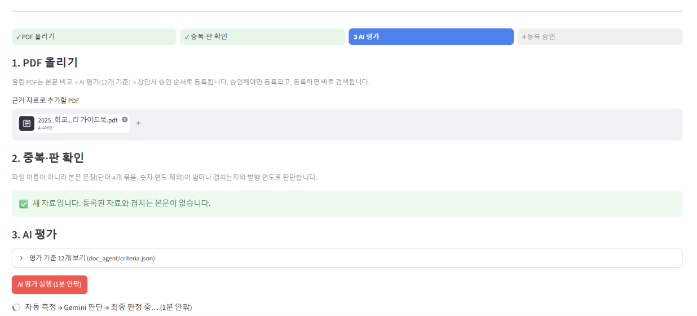
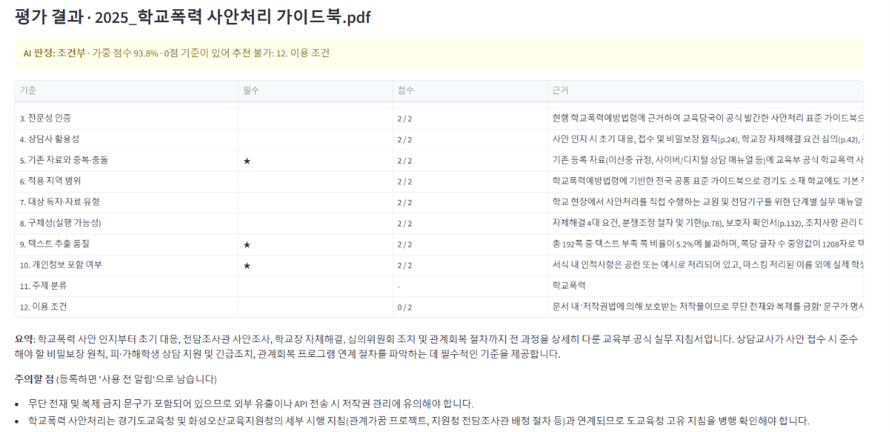
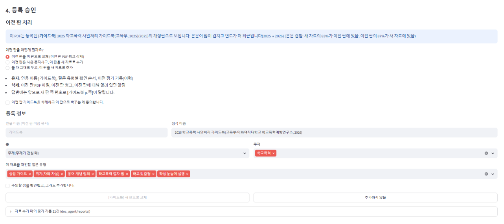
글자를 읽을 수 없는 PDF의 OCR
2026-10-19원인
- 한글(HWP) 문서를 PDF로 인쇄하면서 글자를 글꼴이 아니라 윤곽선(그림 선)으로 저장 → 116쪽 모두 글자층 0자, 글꼴 정보 없음. 사람 눈에는 글자지만 프로그램은 읽지 못함
OCR 두 가지 비교 (같은 61쪽)
| 방식 | 속도 | 품질 | 특징 |
|---|---|---|---|
| 정확(Gemini) | 쪽당 약 20초, 6쪽씩 동시(116쪽 약 5분) | 오탈자 거의 없음, 표를 행 단위로 읽음 | 쪽 이미지가 Google Gemini API로 전송 |
| 빠름(Windows 기본 OCR) | 쪽당 약 0.5초(12쪽 10초) | 본문은 양호, 표·그림 속 글자 오탈자 많음("채널"→"채E") | 이 PC 안에서만, 설치 없음(한국어 OCR 기본 포함) |
구현
doc_agent/ocr.py,doc_agent/ocr_win.ps1: 글자층이 없는 쪽만 OCR. Gemini가 끝내 못 읽은 쪽은 Windows OCR로 채움. 결과는data/ocr/<PDF 내용 해시>.json(이름을 바꿔 올려도 다시 OCR 안 함)rag.page_texts(): 글자 없는 쪽을 OCR 결과로 채운 쪽별 본문 → 중복·판 확인, AI 평가, 청크·검색이 모두 이것을 씀- 평가 에이전트에 "OCR로 읽은 자료"를 알려 텍스트 추출 품질을 OCR 결과 기준으로 판단, 주의할 점에 "숫자·표는 원본 쪽 이미지로 확인"
- 자료 추가 화면: 글자층이 없는 PDF면 "🔤 글자를 읽을 수 없는 PDF입니다(116쪽 중 116쪽)" → OCR 방식 선택 → 진행 막대. OCR이 끝나야 중복 확인·AI 평가로 넘어감
기획서 대조와 1단계 남은 과제(A~F) 구현
2026-10-23기획서와 달랐던 점
- 이산중 규정 기본 자리(
esan)가 비어 있고 추가 자료(발행 연도 2019로 잘못 저장)로만 등록 → 학교 맞춤형 확인 순서 7순위, 평가 Q8~Q10 검색 재현율 0 - 위기 질문이 성희롱·성폭력 안내서를 2순위로 보고, 필수 항목 검색도 그 자료로 감
- 입고 평가의 '주의할 점'은 참고 등급이라 답변 아래 '사용 전 확인'에 한 번도 나오지 않음, OCR 자료 표시 없음
구현
- A 이산중 규정을 기본 자리로 옮김(청크·임베딩·평가·알림 그대로, 재임베딩 없음), 연도 2026. 연도 읽기: 부칙 개정 이력은 가장 늦은 해, 보고서 번호("2024 TR-34")는 연도로 보지 않음 → 마음건강 2025
- B [일반 원칙]과 쪽을 함께 단 줄은 더 엄격하게(뜻 유사도 0.75) 검사, 근거 약함 줄마다 이번에 검색된 쪽 중 '더 맞는 쪽' 추천, 다른 사안 자료를 빌릴 때 대상 사안을 밝히는 규칙(15-1)과 '질문 주제 밖 자료' 표시
- C 자주 묻는 질문 캐시(
answer_cache.py, 첫 질문·같은 자료·같은 규칙일 때만, '새로 답변 받기'), 자료 수에 맞춘 검색 몫(본 질문 합계 60청크, 1·2순위 자료 몫 유지), 자료 등록 임베딩 진행 막대 - D 저장소 v2:
documents.region(전국/경기/화성·오산/학교/다른 시·도),ocr_engine. 근거 블록 머리·근거 표에 "적용 지역 · 기준 연도", 다른 시·도 자료 인용 시 경고, 자료 추가·등록 자료에서 지역·연도 지정·수정 - E 평가 세트 16 → 31문항: Q11 기대 답 갱신, 학업숙려제·정서행동·아동학대·성희롱·사후 위기·치료비·다문화·장애·근거 없음 2·추론 필요 2·과의존, 사례 C1·C2. 지표에 근거 약함(쪽 빌림) 수 추가
- F 다문화·이주배경·북한배경·장애 학생 감지 → 규칙 16(통역·이주배경 전문가·특수교육 전문가 참여) + 가이드북 필수 항목 검색(p.34·45·48·49·61·97·109)
키 없이 점검과 추가 보완, 자료 3개 받기
2026-10-23키 없이 점검(가짜 Gemini)
- OpenAI 호환 가짜 클라이언트: 질문 분석·자료 심사는 미리 정한 JSON, 답변은 미리 정한 글(스트리밍 포함), 임베딩은 BM25로 가장 맞는 실제 청크의 저장된 임베딩(+잡음) → 근거 약함의 뜻 비교·추천이 그럴듯한 값으로 돔
- 저장소 사본·임시 로그·임시 대화 폴더에서 실행(실제 저장소·기록은 그대로인 것 확인)
| 점검 | 결과 | 내용 |
|---|---|---|
| 답변 엔진 | 26/26 | 학교 맞춤형 1순위 이산중·정답 쪽 검색, 위기 순서, 다문화 통역 근거 쪽 검색, 질문 분해, 스트리밍, 근거 약함·추천, 주제 밖 자료, 다른 지역, 캐시, 평가 채점, 429 |
| 자료 등록 | 17/17 | 12기준 평가 → 판정, 적용 지역·연도 저장, 진행 막대, 참고·OCR 알림, 지역 추정, 저장소 v1 → v2 |
| 화면(Streamlit AppTest) | 29/29 | 질문 → 답변 → 근거 표(적용 지역·연도) → 캐시 → 같은 질문 캐시 답 → 새로 답변 받기, 근거 약함·추천·OCR·주제 밖 표시, 429 안내, 등록 자료 표·지역·연도 고치기 |
점검에서 찾아 고친 것
- 엉뚱한 쪽을 빌린 줄을 놓침: 통역 문장에 가이드북 p.24를 단 줄이 단어 겹침 0.23이었지만 같은 자료의 비슷한 장이라 뜻 유사도 0.73(기준 0.70 이상)으로 빠짐 → 다른 검색 쪽이 0.08 이상 더 가까우면 근거 약함으로 남기고 그 쪽(p.45, 0.87) 추천(
BETTER_PAGE_MARGIN) - 다른 지역 자료가 위기 1순위: 서울 2021 가이드라인을 넣자 "최근 등록 먼저" 규칙으로 1순위 → 이 학교에 그대로 쓸 수 있는 지역 자료 먼저, 그다음 정서·위기 주제, 최근 순
- 연도 읽기: 표지에 "연구보고 25-위센터02"처럼 두 자리 보고서 번호만 있으면 2025로 읽음(우수사례집이 본문 사례의 "2023학년도"로 잘못 읽히던 것)
8501 다시 실행
- 10월 20일 이전 작업 세션이 띄운 Streamlit(PID 26172)을 끄고, 새 코드로 8501에서 다시 실행(화면 오류 없음 확인)
자료 3개 받기(등록 대기)
파일(doc_agent/inbox/) | 출처 | 크기·쪽 | 미리 확인 |
|---|---|---|---|
| 2025_위(Wee) 클래스 및 센터 운영 가이드.pdf | wee.go.kr(교육부·한국청소년정책연구원) | 3.6MB · 150쪽 | 연도 2025(보고서 번호), 기존 자료와 중복 없음 |
| 2025_제14회 위(Wee) 희망대상 우수사례집.pdf | wee.go.kr | 11.5MB · 224쪽 | 연도 2025, 중복 없음(이전 평가 조건부: 대상 독자·이용 조건 0점) |
| 2021_단위학교 위기관리 가이드라인(서울특별시교육청).pdf | 학생건강정보센터(schoolhealth.kr) | 1.1MB · 52쪽 | 2021년 판(2025 개정판은 민간 사이트에만 있어 받지 않음), 등록하면 다른 지역 경고 |
Vertex AI(ADC) 전환
2026-10-23- 인증:
GeminiADCClient(google-genai, Vertex AI)가 OpenAI 형식(chat.completions.create·embeddings.create)을 흉내 내 나머지 코드는 그대로. ADC가 없으면GEMINI_API_KEY로 OpenAI 호환 주소 대체 - 모델 그대로: 3.8을 2.5로 몰래 바꾸던 줄을 지움(설정·평가 기록에 3.8로 남는데 실제로는 2.5가 답하던 문제). 3.8은 Vertex 위치
global에서 동작,asia-northeast3는 404 → 기본 위치global - 생각 단계 low:
reasoning_effort를 Gemini 3은thinking_level=LOW, 2.5 계열은 생각 토큰 예산 1024로 바꿈(2.5는 thinking_level을 400으로 거부). 질문 분석 생각 토큰 133 → 0, 1회 2~6초 - 실제 흐름 1건: 임베딩 95개 묶음 정상(3072차원), "학교폭력 신고 후 교육지원청 보고 기한" → 학교폭력 절차·법, 48시간 이내 [가이드북 p.24] 등, 근거 약함 0건, 약 20초. 스트리밍 정상
현재 파일 구성
| 파일 | 내용 |
|---|---|
run.bat | 더블클릭 실행. 저장소가 없으면 만들고 http://localhost:8501 실행 |
app.py | Streamlit 화면: 사이드바, 채팅, 스트리밍·정지, 답변 캐시, 사용 전 확인, 근거 약함, 근거 표·원문·원본 쪽 이미지, 알림 아이콘 |
add_page.py | 자료보관 화면: 자료 추가 4단계(OCR·중복·판 확인·AI 평가·승인, 적용 지역, 진행 막대), 등록 자료(지역·연도 고치기), 알림·정기 점검 |
rag.py | 조각 만들기, 하이브리드 검색, 질문 분석·유형 라우팅·검색 몫, 프롬프트(규칙 1~17), Gemini 호출, 인용 검증, 기록 |
answer_cache.py | 자주 묻는 질문 답변 캐시(logs/answer_cache.json) |
store.py | SQLite 저장소 index/gyeot.db(구조 v2: 적용 지역·OCR 엔진) |
conversations.py · ui_style.py | 이전 대화 저장 · 화면 디자인 |
doc_agent/ | OCR(ocr.py), 중복·판·연도(dedupe.py), 12기준 평가(agent.py, criteria.json), 등록·교체·삭제(ingest.py), 학기별 점검(periodic_review.py), 등록 대기 PDF(inbox/) |
build_index.py | 저장소가 없을 때 처음 만들기(빈 저장소 생성은 여기서만) |
data/ | 등록 자료 PDF 10개, OCR 결과(data/ocr/) |
eval/ | 평가 세트 31문항(eval_set.json), 실행(run_eval.py), 버전별 결과(results/) |
logs/ | 질문·답변·근거 기록(chat_log.jsonl), 이전 대화(conversations/), 답변 캐시 |
docs/ | 저장소 설계(DB_설계.md), 서비스 해설(곁_서비스_이해.html), 사례 비교(테스트_사례1_비교.html), 가이드북 검토 요약, 로고 |
service_guide.html · wee_case_analysis.html | 서비스 소개(사용 흐름 시뮬레이션) · 우수사례집 42건 주제 분석 |
곁 서비스 기획서.pdf | Notion 기획서 출력본 |
README.md | 실행 방법과 동작 방식 |
다음 계획
2026-10-23 기준Gemini 노트북과 답변 성능 비교→ 노트북형 기준선 이상(14단계), 사례 1·2 비교(20단계 전후)특정 학교 학칙 넣고 그 학교에 맞게 답하기→ 이산중 규정, 기본 자리 복구(22단계)상담 기법 자료 추가·자료 평가 에이전트·DB 층 분리·정기 점검·OCR·개정판 교체가정·정서·위기 주제 자료→ 아동학대·정서행동·마음건강·PFA-S 등록, 주제 7개 모두 1개 이상1단계 남은 과제 A~F 구현(22·23단계) → 측정이 남음: Vertex AI 전환(24단계)으로 바로 31문항 평가(v14)를 돌려 평균 20초 이하·품질 하락 없음·사례 C1·C2 근거 약함 0건 확인- 다음 차례: 등록 대기 3개(Wee 운영 가이드, Wee 우수사례집, 서울 위기관리 가이드라인) AI 평가 → 승인, 자료 20개까지 상담교사가 실제 보는 PDF 받기
- 2단계: 상담교사 커뮤니티(지식 공유), 로그인·인증, PostgreSQL + pgvector, 개인정보 자동 가림
개선 후보: 근거 약함 오탐(띄어쓰기 없는 PDF 글자), OCR·임베딩의 진짜 백그라운드 처리, 자동 점검 스크립트를 프로젝트 tests/로 옮기기.